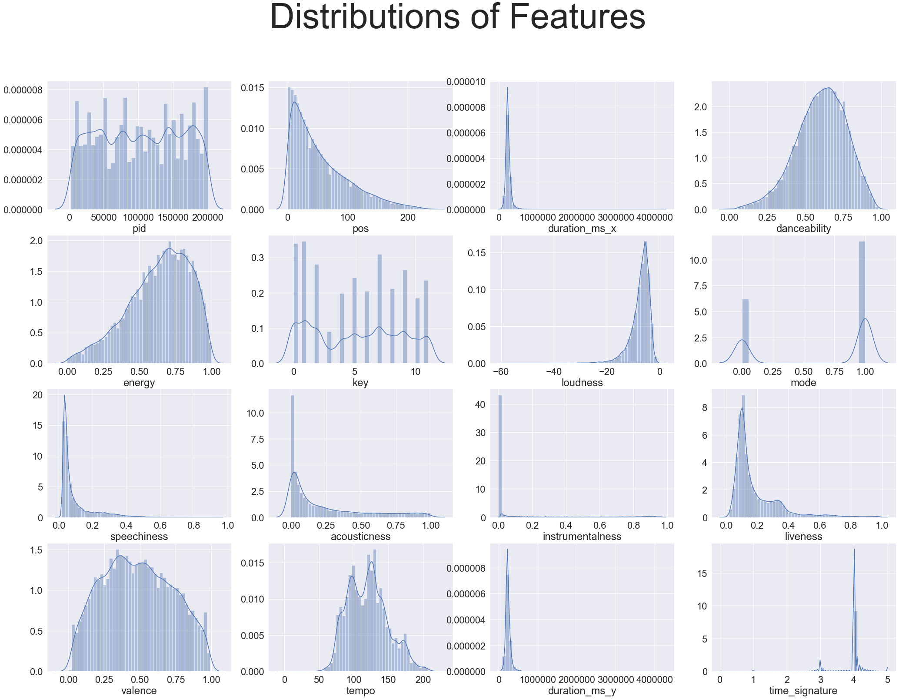
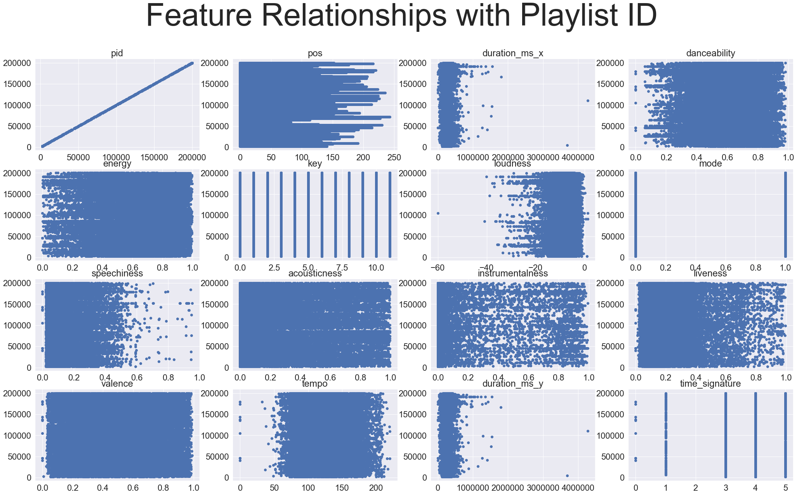
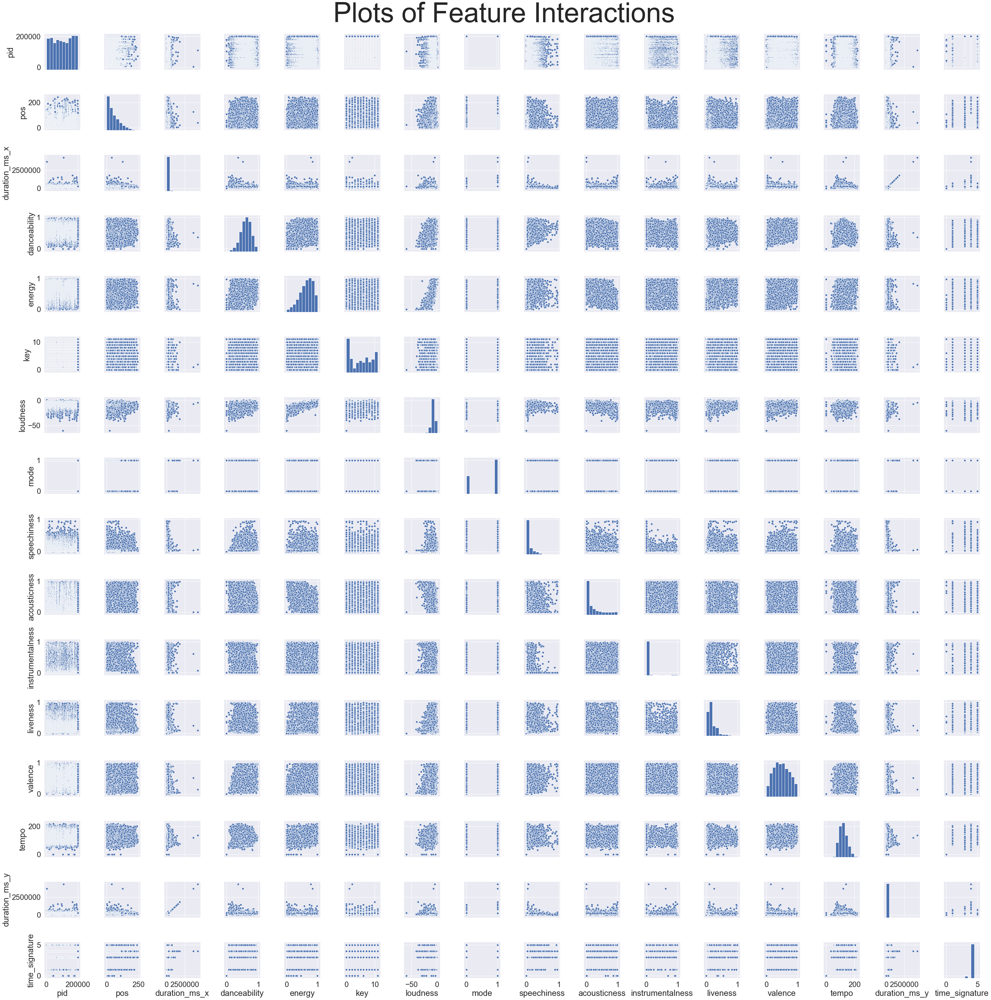

To create the Logistic Regression Model, only 41,379 songs or 604 playlists of the One Million Playlists were used for computational reasons. Despite
this being a small portion of the total dataset, this sample size was sufficiently large enough to analyze and draw conclusions from. When creating this
model, multiple factors were considered to change it. This included changing types of regularization methods (Lasso vs Ridge) and the number of features
present (PCA vs non-PCA).
Among the 16 quantitative variables in the dataset, only a few had seemingly normal distributions. Many of them, such as song positions, loudness, and
speechiness had skewed distributions. This gave some insights into the nature of the playlists and points of differentiation. For example, it is clear
that there is most playlists have fewer than 100 songs and that components like speechiness and loudness of songs are quite similar among songs. The
more normally distributed ones such as danceability, energy, valence, and tempo all seem to be variables where songs can differ greatly.

After carefully considering these distributions, it is clear that the variables that will be most helpful in creating this model are duration, danceability,
energy, loudness, speechiness, acousticness, liveness, valence, and tempo. The distributions of each of these are normal enough that we can be sure the logistic
regression will work well enough from these features. Also, these are good factors to predict playlists intuitively. While duration may not necessarily be different
among most songs, songs within the same playlist would typically have similar lengths. Also, playlists generally follow a theme, resulting in a collection of songs
that have similar levels of all the other features.
The relationship of the quantitative predictors with playlist ID also gives insight into which predictors may be useful points for differentiation. Variables that
have observations spread across their respective graphs seem to be great points of differentiation. Given that some of the predictors did not have normal distributions,
their relationships to playlist ID is a bit unclear. However, this makes it clear that predicting a playlist will require well-defined classes with a well-trained
classification model.

Something else to consider is how these predictors relate and interact with each other. There are quite a few predictors where some high correlation can be seen.
The relationships among duration, loudness, danceability, and energy, to name a few, are quite interesting. Such examples of correlation could lead to some issues
of multicollinearity. This will be important to consider when interpreting our models.

Notebooks: LogisticReg.ipynb